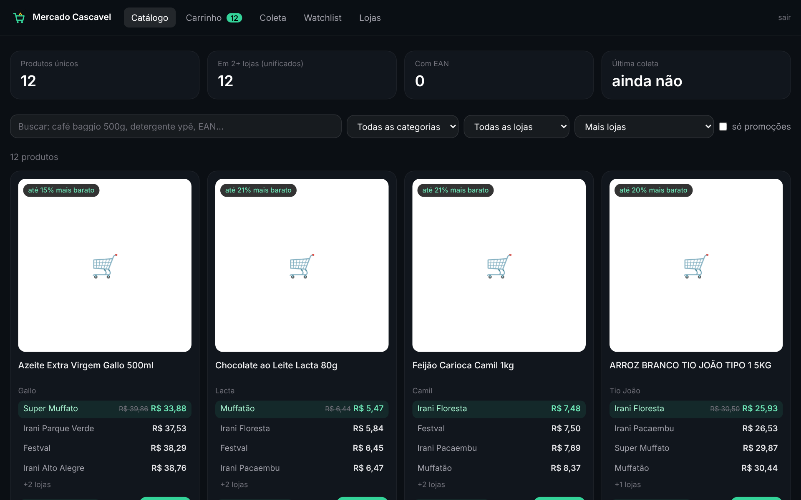
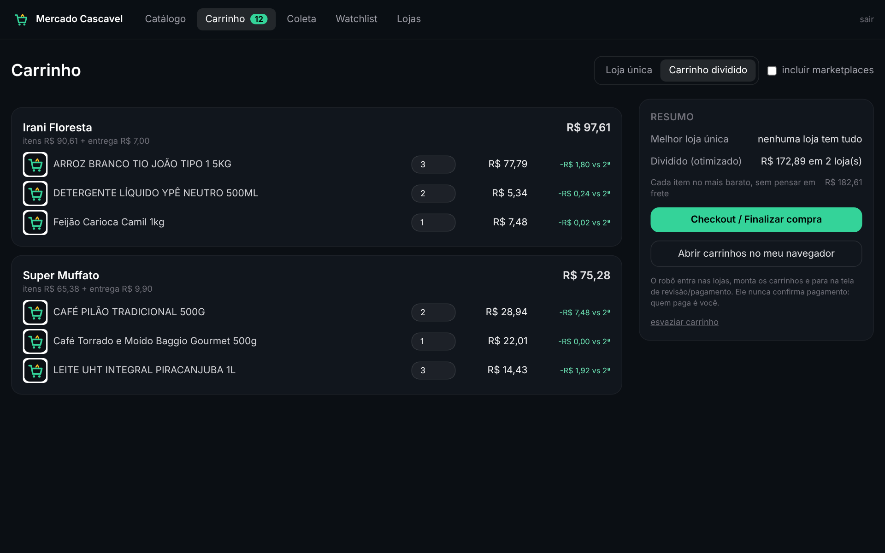
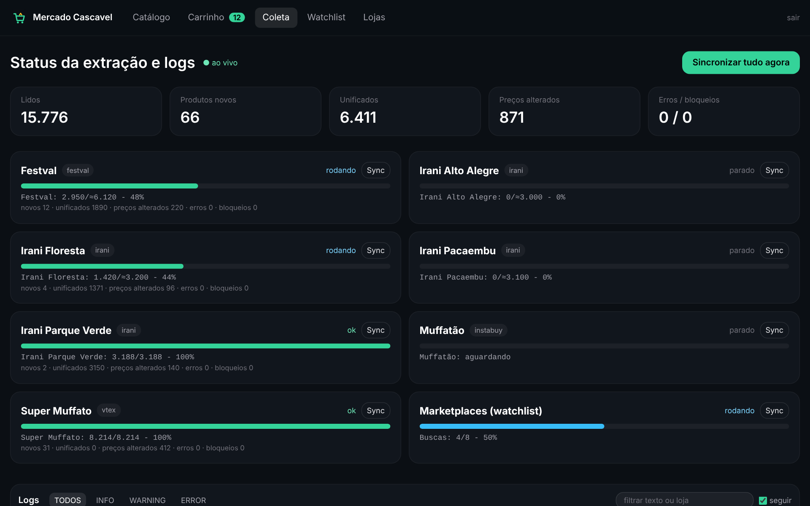
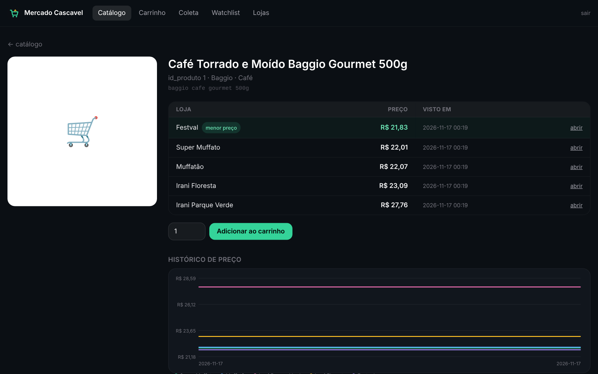

Onde a compra do mês
sai mais barata em Cascavel?
Um agregador de preços que roda em casa. Toda madrugada ele lê o catálogo dos supermercados da cidade, reconhece que "CAFE BAGGIO GOURMET 500G" e "Café Torrado e Moído Baggio Gourmet 500g" são o mesmo produto, e monta o carrinho mais barato, já contando o frete. No fim, um robô deixa os carrinhos prontos nas lojas e para na tela de pagamento. Quem paga é a pessoa.
lojas físicas cobertas (4 filiais Irani, Muffato, Festval, Muffatão*)
plataformas de e-commerce lidas pela API JSON que a própria vitrine usa
de similaridade, e mesmo peso/volume, para dois nomes virarem um produto
pagamentos feitos pelo robô: ele é bloqueado no código, na rede e no clique
* O Muffatão bloqueia clientes automatizados. O sistema respeita isso e mantém a loja desligada até existir um caminho autorizado.
As telas
Prints com dados de demonstração (preços fictícios). Clique para ampliar.

id_produto, preço de cada loja lado a lado e o menor em destaque.


Da vitrine da loja ao carrinho pronto
APIs das vitrines
VTEX (catálogo por categoria, total pelo header resources), VTEX IO Intelligent Search com regionId do CEP de Cascavel e GraphQL federado da Mercafácil para as 4 filiais. Jitter, rotação de User-Agent, backoff em 429 e parada em bloqueio.
Um produto, um id
matcher.py decide se o item já existe: SKU visto, chave da rede, EAN válido ou fuzzy com travas. Só produto novo baixa imagem, uma vez.
Histórico enxuto
Linha nova só quando preço, promoção ou estoque mudam. Coletas iguais apenas carimbam a verificação. Uma tabela materializada guarda o "preço agora".
Carrinho e checkout
Otimizador exato com frete e pedido mínimo. Playwright com perfis persistentes monta os carrinhos em paralelo e entrega as abas na revisão.
O que a sondagem das lojas revelou
| Loja | Plataforma | Detalhe que mudou o design |
|---|---|---|
| Super Muffato | VTEX | preço por canal de venda (sc=22), não por CEP |
| Festval | VTEX IO | a busca legada ignora a região; o mesmo café custa diferente em Cascavel e Curitiba |
| Irani (4 filiais) | Mercafácil | sem EAN e com id diferente por filial; o modelId é o mesmo nas quatro |
| Muffatão | Instabuy | bloqueia robôs: fica desligado (sem disfarce) |
Por que não "cada item na loja mais barata"?
Porque o frete entra na conta. Economizar R$ 3 num item e pagar R$ 9,90 de entrega em mais uma loja é prejuízo. Com até ~10 lojas, enumerar os subconjuntos de até 4 lojas (no máximo 385) dá a resposta exata em milissegundos: cada item vai para a loja mais barata dentro do subconjunto, respeitando pedido mínimo, e vence o menor itens + fretes.
A tela mostra os três números: melhor loja única, divisão otimizada e a divisão ingênua, para deixar claro quanto o frete muda a decisão.
Quando dois nomes são o mesmo produto
A regra de ouro do banco: produto idêntico em lojas diferentes tem o mesmo id_produto; só o registro de preço varia por loja. Cada item coletado passa por esta cascata:
SKU já vinculado
A segunda coleta não refaz trabalho: o vínculo SKU → produto fica gravado com o método e o score.
Chave da rede
mercafacil:<modelId> une as filiais Irani, que não expõem EAN.
EAN / GTIN
Validado pelo dígito verificador e normalizado (GTIN-14 → 13). Código de balança, como "1311" do pão francês, é descartado.
Fuzzy com travas
Média de token_sort e token_set do RapidFuzz ≥ 88, comparando só dentro do mesmo bloco de medida (pacote, valor, unidade). Recusa se as marcas, os números do nome, os descritores de variante (integral, zero, limão…) ou os EANs divergem.
| Loja A | Loja B | Resultado |
|---|---|---|
| Café Torrado e Moído Baggio Gourmet 500g | CAFE BAGGIO GOURMET 500G | mesmo produto |
| Café Baggio Gourmet 500g | Café Baggio Gourmet 1kg | 500g ≠ 1kg |
| Café Baggio Gourmet 500g | Café Baggio Gourmet 2x500g | pacote diferente |
| Detergente Ypê Neutro 500ml | Detergente Ypê Limão 500ml | variante diferente |
| Leite Integral Piracanjuba 1L | Leite Desnatado Piracanjuba 1L | variante diferente |
Todos esses casos são testes automatizados (34 testes, HTTP simulado, rodando também na imagem Docker).
O robô monta o carrinho. Você paga.
Sessões persistentes
Um perfil do Chromium por loja, abertos ao mesmo tempo. Login com credenciais cifradas (Fernet, chave fora do banco) ou cookies salvos. A tela do navegador é acessível por noVNC para a pessoa assumir.
Deep link quando dá
Na VTEX o carrinho inteiro entra num link /checkout/cart/add?sku=…&qty=…&seller=…, o que também vira um plano B sem robô: abrir os carrinhos no próprio navegador.
Três travas de pagamento
Não existe passo de pagamento no código; uma rota de rede aborta POSTs de transação enquanto o robô controla a aba; e todo clique recusa botões como "Finalizar pedido" ou "Pagar". O teste ponta a ponta usa uma loja falsa que tenta fechar o pedido sozinha, e nenhum POST chega.